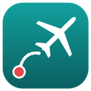

Price check done
AirFare has closed the flight tabs it opened. This page stays so Firefox doesn't remember the flight pages as your last session. If Firefox offers to restore your previous tabs, you can do it here. Otherwise, close this window.